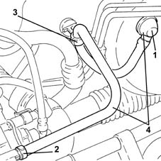
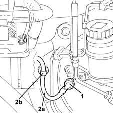
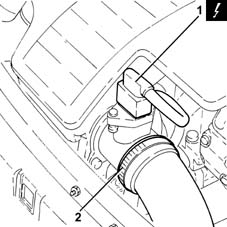
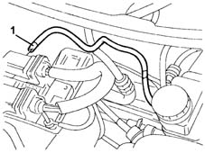
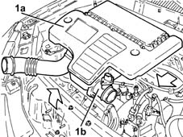
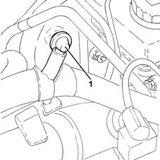
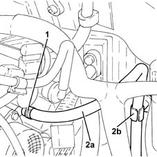

3330D24 vacuum pipe for brake servo - r+r
- Path
- Procedures > 33 BRAKING SYSTEM > 3330 HYDRAULIC BRAKING SYSTEM > 3330D brake vacuum system > 3330D24 vacuum pipe for brake servo - r+r
- Kind
- repair procedure (removal / refitting; the operation number is the code)
- Applies to
- all engines; all production periods
- Interactive page
- https://sloeber94.github.io/elrnDB-lYpsln/en/#/2429178
Applies to: engines: 1.2 8v; all production periods
 Removing
Removing
 Refitting
Refitting1. Disconnect the brake servo single-acting valve from the brake servo.
2. Disconnect the vacuum pipe for the brake servo from the air chamber.
3. Release the vacuum pipe for the brake servo from the retaining band.
4. Remove the brake servo single-acting valve and the vacuum pipe.

Applies to: engines: 1.2 16v, 1.4 16v; all production periods
Removing
Refitting1. Disconnect the brake servo single-acting valve from the brake servo.
2. Release the vacuum pipe for the brake servo (2a) from the retaining band (2b).

Applies to: engines: 1.3 JTD; all production periods
Removing
Refitting.
Proceed with removal 5530B10 battery - r+r .
1. Disconnect the electrical connection from the air flow meter.
 | Name | Connector |
|---|---|---|
1 | Air flow meter |
2. Loosen the band and disconnect the the turbocharger air inlet sleeve from the rigid pipe, air flow meter side.

Applies to: engines: 1.2 8v; all production periods
Refitting
RemovingRefit the brake servo single-acting valve and vacuum pipe.
Secure the vacuum pipe for the brake servo to the securing band.
Connect the vacuum pipe for the brake servo to the air chamber.
Connect the brake servo one-way valve to the brake servo.
Applies to: engines: 1.2 16v, 1.4 16v; all production periods
1. Disconnect the vacuum pipe for the brake servo from the air chamber.

Applies to: engines: 1.3 JTD; all production periods
1. Remove the air filter (1a) complete with air flow meter (1b) by releasing from the underlying pins and then from the rear fastenings.

Applies to: engines: 1.2 16v, 1.4 16v; all production periods
Remove the brake servo single-acting valve and the vacuum pipe.
Applies to: engines: 1.3 JTD; all production periods
1. Disconnect the brake servo single-acting valve from the brake servo.

Applies to: engines: 1.2 16v, 1.4 16v; all production periods
Refitting
RemovingRefit the brake servo single-acting valve and vacuum pipe.
Connect the vacuum pipe for the brake servo to the air chamber.
Secure the vacuum pipe for the brake servo to the securing band.
Connect the brake servo one-way valve to the brake servo.
Applies to: engines: 1.3 JTD; all production periods
1. Disconnect the vacuum pipe for the brake servo from the vacuum unit.
2. Remove the vacuum pipe (2a) with one-way valve by releasing from fastening (2b).

Applies to: engines: 1.3 JTD; all production periods
Refitting
RemovingRefit the brake servo single-acting valve and vacuum pipe.
Connect the vacuum pipe for the brake servo to the vacuum unit.
Connect the brake servo one-way valve to the brake servo.
Replace the air filter, complete with air flow meter, in its housing.
Connect the air intake sleeve to the turbocharger, air flow meter side, and tighten the band.
Connect the electrical connection to the air flow meter.
Proceed with refitting 5530B10 battery - r+r .